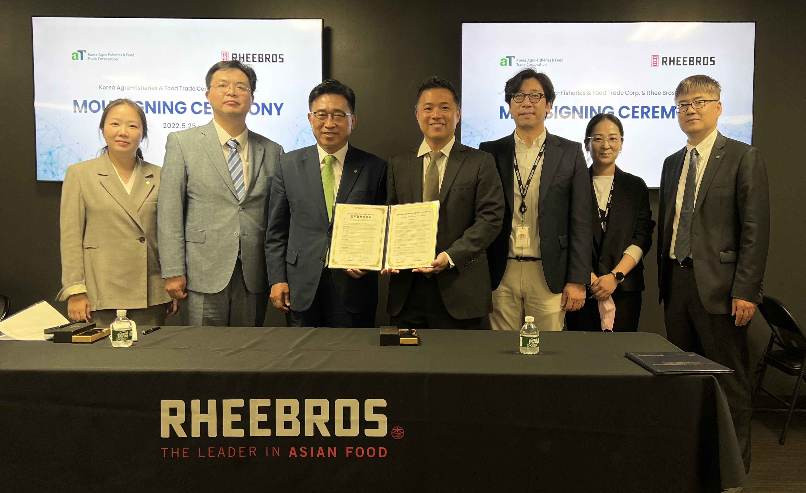

전 세계 한인 경제인 '글로벌 그린푸드 데이' 동참한다.
- aT, 세계한인무역협회(World-OKTA)와 ESG 실천 협약 -
한국농수산식품유통공사(사장 김춘진)에서 추진 중인 저탄소 식생활 캠페인 ‘글로벌 그린푸드 데이’에 전 세계 한인 경제인이 동참할 수 있는 계기가 마련됐다.
한국농수산식품유통공사와 세계한인무역협회(WorldOKTA, 회장 장영식)은 '22.3.30, 경기도 SINTEX에서 진행 중인 제23차 세계대표자대회와 연계해 ESG 실천 업무협약을 체결하고, ▲전 세계 한인 경제인 네트워크 활용한 저탄소 식생활 캠페인 「글로벌 그린푸드 데이」홍보·교육 등 ESG 가치 실천 글로벌 확산 ▲재외동포 한인 기업 대상 ESG경영 추진 노력 등에 협력하기로 했다.
‘코리아 그린푸드 데이’는 우리 모두와 미래세대를 위해 먹거리의 생산유통소비 전 과정에서 발생하는 온실가스 배출량을 줄여 ‘농장에서 식탁까지 Net Zero(탄소중립)’를 실천하는 저탄소 식생활 캠페인으로, 공사는 국내를 넘어 해외에서도 저탄소 식생활에 동참할 수 있도록 ‘글로벌 그린푸드 데이’를 추진하고 있다.
UN 식량농업기구(FAO)에 따르면 먹거리 관련 이산화탄소 배출량은 전체 온실가스 배출량의 31%로 심각한 수준임에 따라, 공사는 지난해부터 국내 66개 지자체·교육청·협회 등과 협력해 저탄소 식생활을 확산 중이며, 해외로는 아시아 대표 백화점 그룹 Parkson(百盛), 미국 대형 유통업체 H-MART와 협약을 맺고 저탄소 식생활을 범세계 운동으로 추진 중이다.
특히, 전 세계 64개국 138개 지회, 2만8천여 회원을 보유하고 있는 WorldOKTA와의 이번 협약으로, 전 세계 각지에서 활동 중인 한인 경제인들과 함께 저탄소 식생활 운동을 확산함으로써 글로벌 2050 탄소중립 실현에 앞장설 수 있게 되었다.
김춘진 한국농수산식품유통공사 사장은 “전 세계의 화두로 떠오른 ESG 경영실천에서 환경경영은 중요한 축”이라며 “저탄소 식생활 문화의 글로벌 확산에 동참하여 지구를 지키는 2050 탄소중립 체제에 앞장서주시길 기대한다”고 말했다.
장영식 WorldOKTA 회장은 “먹거리 차원의 탄소배출량 줄이기 캠페인인 ‘글로벌 그린푸드 데이’의 중요성에 대해 공감했으며, 앞으로 캠페인을 전 세계로 확산시키는데 협력하겠다”고 말했다.
aT, 무역협회와 저탄소 식생활 협력 맞손
한국농수산식품유통공사(사장 김춘진)와 한국무역협회(회장 구자열)는 '22년 4월 5일, 삼성동 한국종합무역센터에서 저탄소 식생활 글로벌 확산 및 농수산식품 수출 활성화를 위한 업무협약을 체결했다.

양 기관은 이번 협약을 통해 ▲저탄소 식생활 ‘글로벌 그린푸드 데이’ 캠페인 공동전개 등 ESG 가치 실천 확산 ▲농수산식품 수출확대를 위한 상호협력 등에 힘을 모으기로 했다.
‘코리아 그린푸드 데이’는 우리 모두와 미래세대를 위해 먹거리의 생산유통소비 전 과정에서 발생하는 온실가스 배출량을 줄여 ‘농장에서 식탁까지 Net Zero(탄소중립)’를 실천하는 저탄소 식생활 캠페인으로, 공사는 국내를 넘어 해외에서도 저탄소 식생활에 동참할 수 있도록 ‘글로벌 그린푸드 데이’를 추진하고 있다.
UN 식량농업기구(FAO)에 따르면 먹거리 관련 이산화탄소 배출량은 전체 온실가스 배출량의 31%로 심각한 수준이며, 이에 공사는 먹거리 분야 탄소 절감을 위해 지난해부터 69개 지자체·교육청·협회 등과 업무협약을 맺고 저탄소 식생활 운동을 국내외로 확산시키고 있다.
한국농수산식품유통공사 김춘진 사장은 “우리나라 무역의 새로운 도약을 선도하는 한국무역협회와 ‘글로벌 그린푸드 데이’ 확산에 협력하게 되어 기쁘다”며, “이번 협약으로 저탄소 식생활 실천뿐 아니라 상호 간 수출지원 협력을 통해 대한민국을 농수산식품 수출강국으로 도약시키겠다”고 말했다.
미국 리브라더스(RHEEBROS)와 MOU 체결
한국농수산식품유통공사(사장 김춘진)와 리브라더스(대표 이라빈)는 '22년 5월 25일 미국 메릴랜드 소재 리브라더스 본사에서 K-Food 수출확대와 및 저탄소 식생활 확산을 위한 업무협약을 체결했다.

리브라더스는 미국 최대 아시안푸드 전문 유통회사로 한국식품 등 다양한 아시안식품을 미 전역과 세계 30여 국에 공급 중이며, 양사는 이번 협약을 통해 ▲K-Food 수출확대 ▲저탄소 식생활 ‘글로벌 그린푸드 데이’ 확산 등 ESG 실천에 협력하기로 했다.
한국농수산식품유통공사 김춘진 사장은 “미국 전역에 유통망을 가진 리브라더스와 협력하게 되어 K-Food 확산이 더욱 가속화될 것으로 기대된다”며, “또한, 지구를 지키는 저탄소 식생활에 리브라더스와 고객들이 적극 동참해주길 바란다”고 말했다.
리브라더스 이라빈 대표는 “건강에도 좋고, 맛도 좋은 K-Food의 이미지가 미국 주류사회에서 각인되고 있어, K-Food의 인기는 계속될 것”이라며, “미국 내 K-Food 유통 활성화와 ‘글로벌 그린푸드 데이’ 확산에도 힘을 보태겠다”고 말했다.
UN 식량농업기구(FAO)에 따르면 먹거리 관련 온실가스 배출량이 전 세계 온실가스 배출량의 31%를 차지할 만큼 심각해, 저탄소 식생활 등 세계인들의 일상 속 작은 실천이 시급한 상황이다.
공사가 추진하는 ‘글로벌 그린푸드 데이’는 세계인이 친환경․유기농 농식품을 구입하고 먹을 만큼 조리해 남김없이 먹음으로써 음식물 쓰레기를 최소화하여 지구를 지키는 저탄소 식생활 캠페인으로, 미국 대형유통업체 H-MART와 아시아 대표 백화점기업 바이셩(百盛/Parkson) 그룹, 전 세계 64개국 138개 지회, 2만 8천여 회원을 보유한 World OKTA(세계한인무역협회) 등과 협약을 맺고 전 세계로 캠페인을 확산하고 있다.
한편, 한국 농수산식품의 대미 수출실적은 최근 글로벌 물류대란 악재에도 불구하고, 지난해 역대 최대 수출인 16억6천만 달러를 기록했으며, 올해도 4월말 기준 전년 대비 18.9% 성장한 6억4천3백만 달러로 높은 성장세를 유지하고 있다.